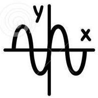
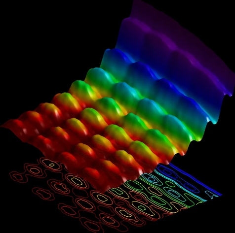
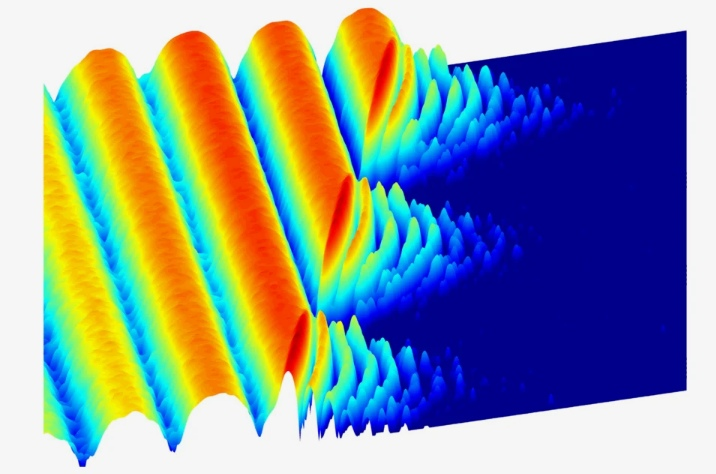

Квантовая физика
Квантовая физика

Ква́нтовая фи́зика — раздел теоретической физики, в котором изучаются квантово-механические и квантово-полевые системы и законы их движения. Основные законы квантовой физики изучаются в рамках квантовой механики и квантовой теории поля и применяются в других разделах физики.
Все современные космологические теории также опираются на квантовую механику, которая описывает поведение атомных и субатомных частиц. Квантовая физика сосредоточена только на математическом описании процессов наблюдения и измерения.

Объекты, описываемые квантовой физикой, не являются частицами и волнами, а скорее принадлежат третьей категории, которая наследует свойства волн (частоту и длину волны, вместе с распространением в пространстве) и некоторые свойства частиц (их можно пересчитать и локализовать с определенной степенью).

Энергия, содержащаяся в квантовом поле, приходит в кратных величинах некой фундаментальной энергии. Для света это ассоциируется с частотой и длиной волны света — высокочастотный свет с короткой волной обладает огромной характерной энергией, тогда как низкочастотный свет с длинной волной обладает небольшой характерной энергией.
Одним из самых удивительных и (исторически, по крайней мере) противоречивых аспектов квантовой физики является то, что невозможно с уверенностью предсказать исход одного эксперимента с квантовой системой.Математическое описание квантовой системы, как правило, принимает форму «волновой функции», представленной в уравнениях греческой буковой пси: Ψ. Ведется много дискуссий о том, что конкретно представляет собой волновая функция, и они разделили физиков на два лагеря: тех, кто видит в волновой функции реальную физическую вещь (онтические теоретики), и тех, кто считает, что волновая функция является исключительно выражением нашего знания (или его отсутствия) вне зависимости от лежащего ниже состояния отдельного квантового объекта (эпистемические теоретики).